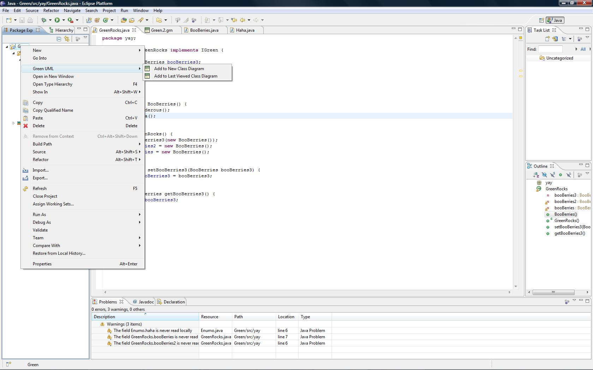

From an empty project, you can right-click the project root, then choose "Add to New Class Diagram" from the context menu.

If the project contains existing class files, they will be automatically loaded
Diagrams can also be opened from the package and class file levels. They will
include the appropriate classes if they exist and will be placed according to
the "Create all diagram files in project root" option in Preferences.